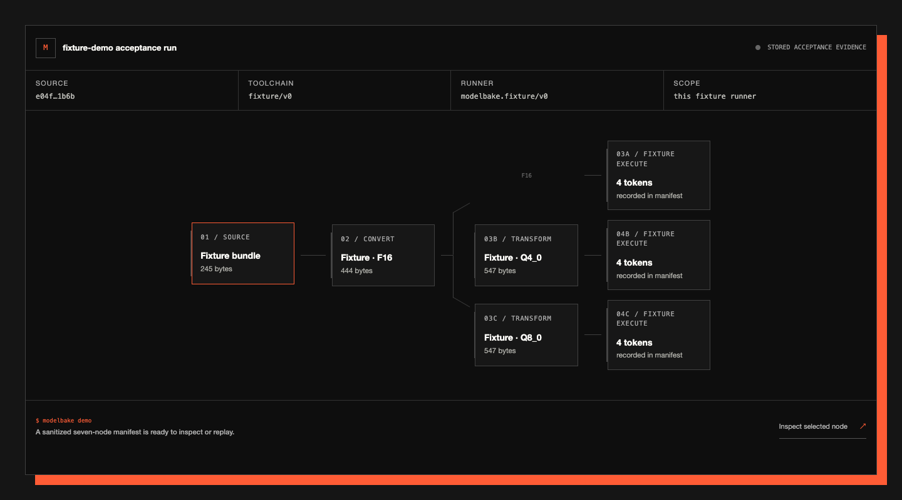
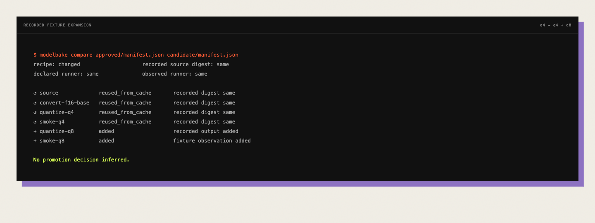

git status: cleanBuild history for GGUF files
See what changed
in your GGUF.
ModelBake remembers the model, converter, settings, and files from your last build. Build again and it shows the difference.
- runs locally
- never uploads your model
- free and open source
- Python 3.11+
- macOS + Linux
TERMINAL
python -m pip install https://modelbake.dev/downloads/modelbake_ai-0.1.0-py3-none-any.whlmodelbake tourFREE FOREVER · APACHE-2.0 · NO ACCOUNT · SOURCE CODE · 64 KB WHEEL
WHAT CHANGED?One change.
Easy to review.
Easy to review.
MODELSame
no changeLLAMA.CPPChanged
new converterQ4_0 FILEChanged
new GGUF bytes
NEXT STEPReview this buildEverything else stayed the same.
SEE THE REAL RELEASE RECORD ↗
Build a GGUFModelBake remembers how
Build it againsame steps, new release
See the differencereview only what changed
Why Git is not enough
Git says clean.
The release changed.
Your code can stay the same while the downloaded model, converter, or finished GGUF changes. ModelBake checks all of them.
sha256 movedsha256 movedMODELBAKEreview againthe old acceptance no longer applies
The actual product
Every build gets one readable record. The next build gets a clear before-and-after.
Remember.
Then compare.


No model required
See the workflow.
Replay a tiny example and open any step. Nothing is uploaded and no real model is needed.
Mfixture workflow preview
loading example
SOURCE
loading…TOOLCHAIN
fixture/v0RUNNER
modelbake.fixture/v0SCOPE
this fixture runnerF16
$ modelbake demoLoading the bundled acceptance manifest.
Why you come back
Every new build
gets easier.
Unchanged work is reused. Changed work is obvious.
FIRST RUN
4 produced · 3 fixture-observed
62f84e2a…
new evidence written
REPEAT RUN
7 digest-verified cache hits
ac8717d1…
no adapter step re-executed
$ modelbake compare approved/manifest.json candidate/manifest.json
recipe: changed recorded source digest: same
declared runner: same observed runner: same
↺ source reused_from_cache recorded digest same
↺ convert-f16-base reused_from_cache recorded digest same
↺ quantize-q4 reused_from_cache recorded digest same
↺ smoke-q4 reused_from_cache recorded digest same
+ quantize-q8 added recorded output added
+ smoke-q8 added fixture observation added
No promotion decision inferred.
Add it to your current workflow
Keep Git.
Add one check.
ModelBake runs beside Git and llama.cpp. Add one CI step and every GGUF release gets a record and a comparison.
MODEL RELEASE / CI●
- uses: ./.github/actions/modelbake
with:
recipe: modelbake.yaml
baseline-store: .modelbake/baselines
baseline-name: production
enable-github-cache: "false"
upload-evidence: "false"
✓ record the artifact bytes produced
✓ verify the current bytes
✓ compare with the accepted predecessor
✓ stop local acceptance when bytes move
SOURCE + CI EXAMPLE INCLUDED ↓
Evidence, correctly named
Know what
green means.
THE BUILD ESTABLISHESTHE BUILD DOES NOT ESTABLISH
✓
Output bytes were produced and digested.
×
No model quality conclusion.
✓
The fixture adapter decoded each requested test artifact.
×
That any model runtime opened them.
✓
The manifest records source, recipe, runner, and output digests.
×
Future reproduction, license, security, or production readiness.
“A green process exit is not a green model.”
Local from the first build
Run the
first diff.
The local CLI stays free. No account. No model upload. One command shows the complete baseline → candidate → diff loop.
01 python -m pip install https://modelbake.dev/downloads/modelbake_ai-0.1.0-py3-none-any.whl
02 modelbake tour
baseline → candidate → exact release diff